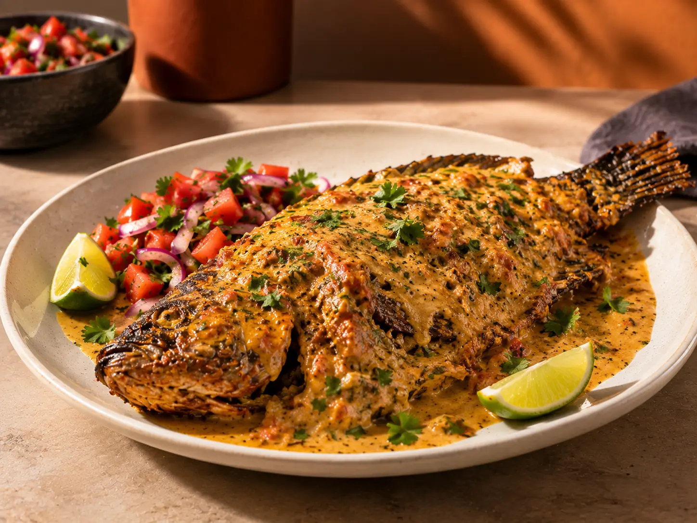
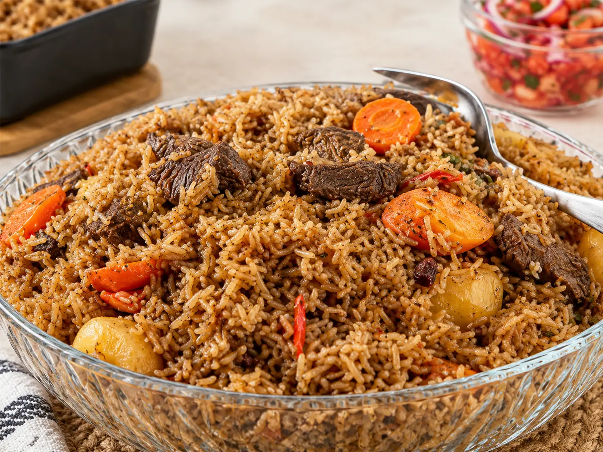
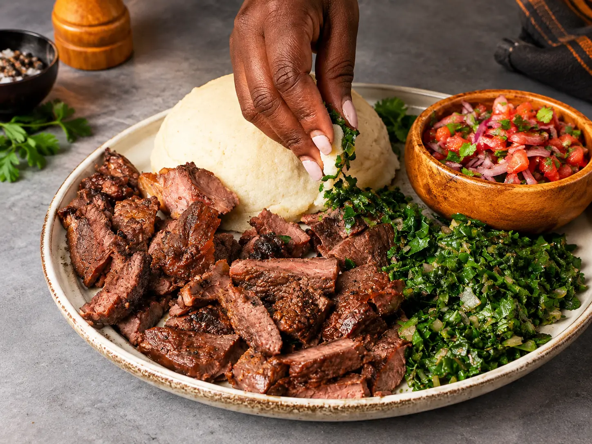
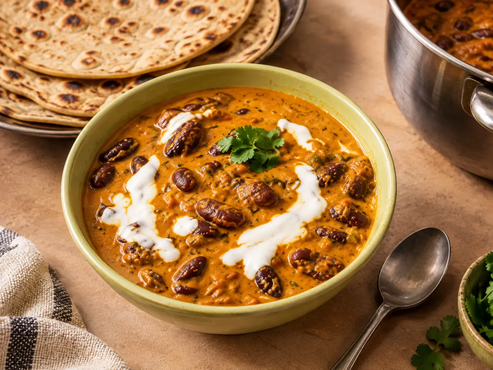
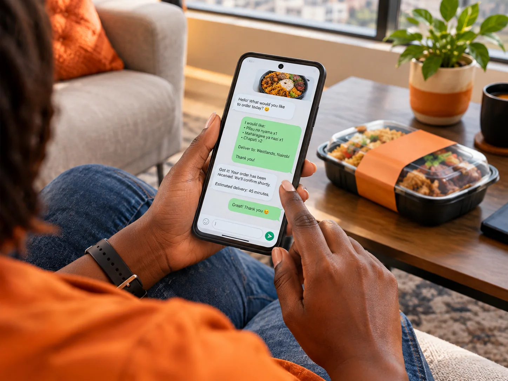
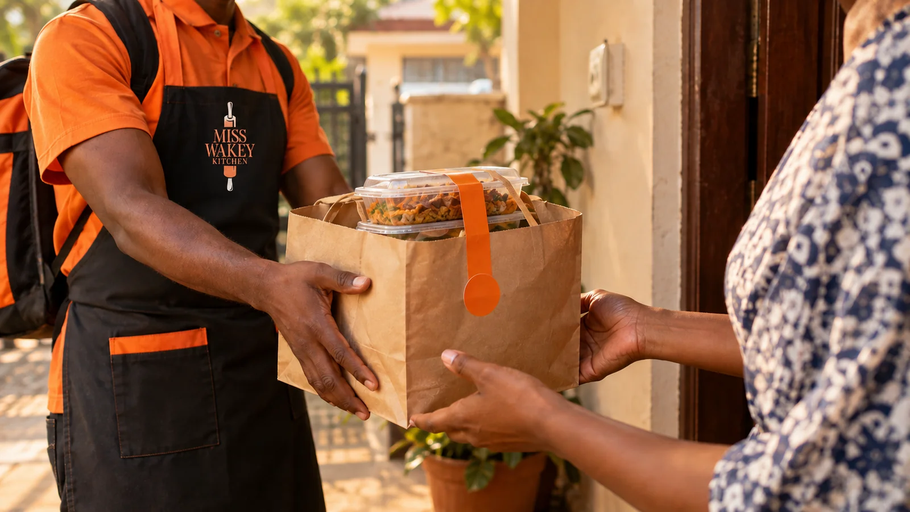
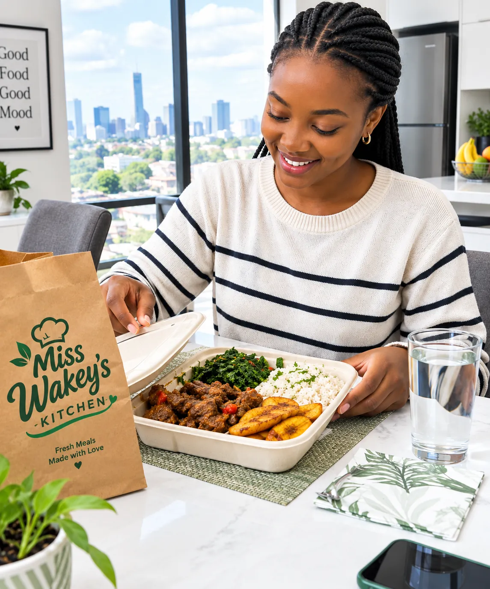
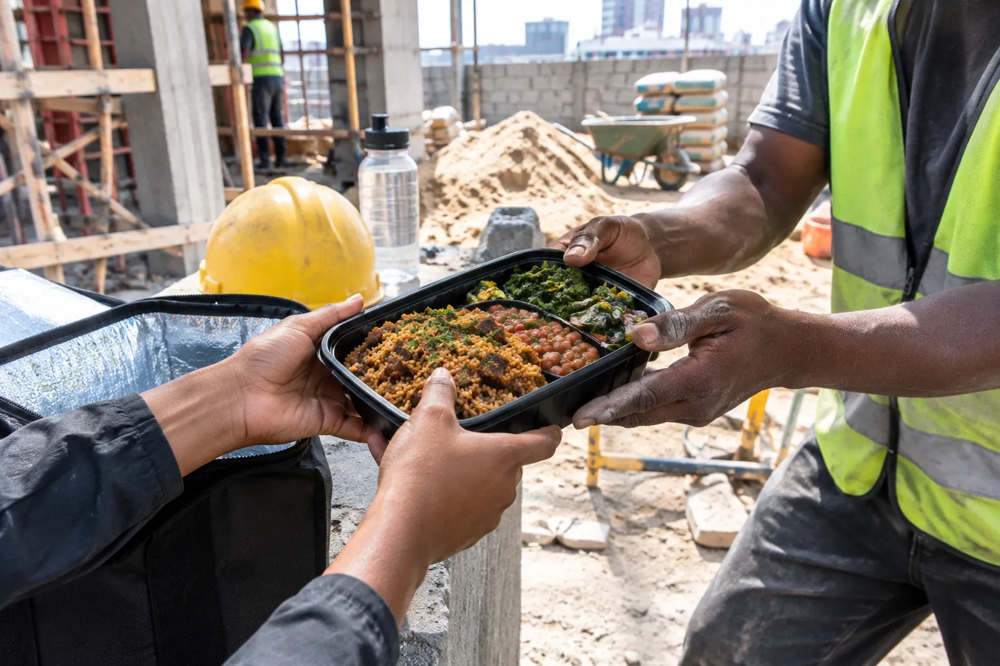
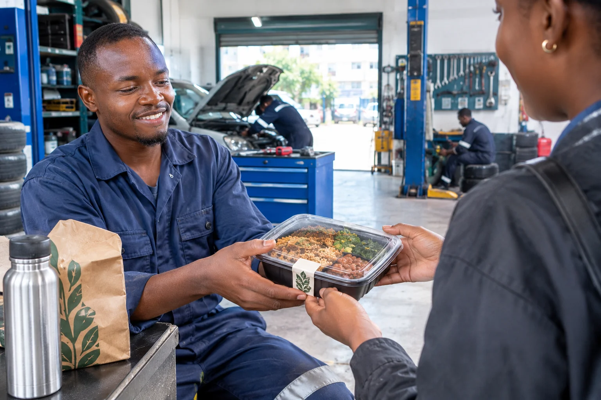

Fish
Nairobi · Home & office delivery
Home-cooked Kenyan food, prepared fresh and delivered straight to your door. From everyday favourites to coastal-inspired dishes, made for sharing, working and enjoying.
Today's picks




Send us your order and delivery address.

Nothing is pre-made. Your order goes into the pot after you send it.
Packed and brought straight to your home or office in Mombasa.

From our customers
From everyday lunches to meals shared at home, here's what people have said after eating from Miss Wakey Kitchen.
“The food tastes exactly like something you would make at home. The pilau was full of flavour and the portions were generous.”
“I ordered lunch for the office and everyone kept asking where it came from. Fresh, filling and delivered warm.”
“The maharagwe ya nazi was the highlight for me. Simple food, but cooked really well and with so much flavour.”
“Everything arrived neatly packed and still warm. You can tell the food is prepared with care.”
“The chapati and beef were so good I ordered again the following week. This is the kind of food you actually look forward to.”
Where we deliver
Hungry at home, stuck at the office, or halfway through a busy workday? We cook fresh and bring your meal where you are.
Order your meal
Lunch, supper or something good for the whole house.


Made to order and delivered around Nairobi.